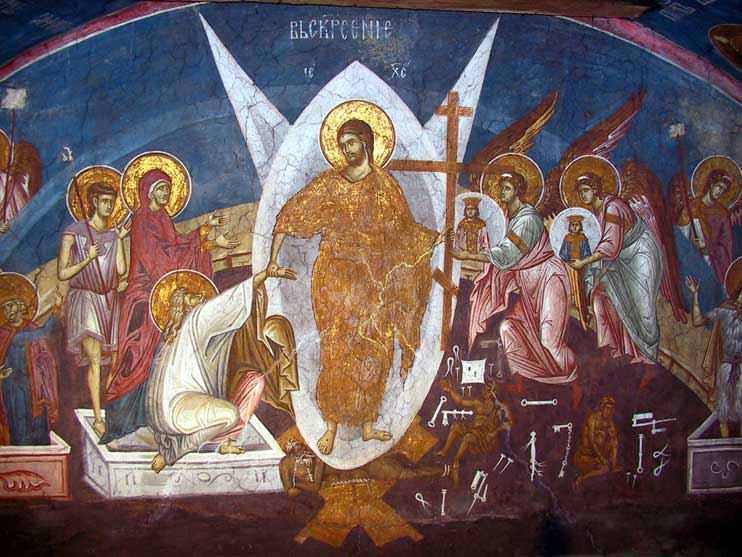
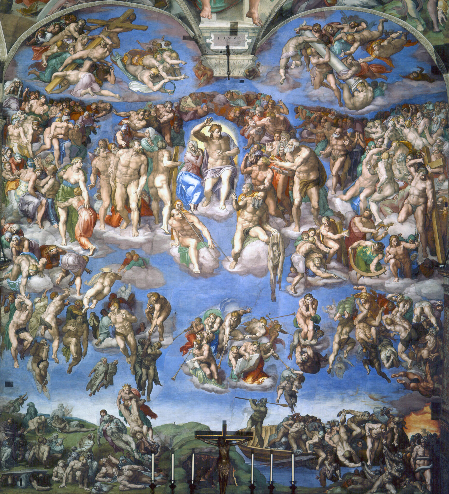

身体复活的重要性
上帝创造的人是既有身体又有灵魂的
人类堕落进入罪中既带来了身体的死亡，也带来了灵性的死亡
上帝拯救的工作会完全恢复祂的子民——不论是在身体方面，还是在灵性方面
圣经中末日复活的特点
在旧约中所提到的末日复活
以赛亚书26:19 - "你的死人要复活，我的尸首也要兴起。睡在尘埃的啊，要醒起歌唱！"
但以理书12:2 - "睡在尘埃中的，必有多人复醒，其中有得永生的，有受羞辱永远被憎恶的。"
复活身体的特质

完美不朽的
哥林多前书15:42-43 - "...所种的是必朽坏的，复活的是不朽坏的；所种的是羞辱的，复活的是荣耀的；所种的是软弱的，复活的是强壮的；所种的是血气的身体，复活的是灵性的身体。"
完全荣耀的
哥林多前书15:47-49 - "...头一个人是出于地，乃属土；第二个人是出于天...我们既有属土的形状，将来也必有属天的形状。"
复活身体的特质
充满能力的
哥林多前书15:42-43 - "...所种的是软弱的，复活的是强壮的。"
更加属灵的
哥林多前书15:44 - "...所种的是血气的身体，复活的是灵性的身体..."
基督徒对复活的盼望

对复活的盼望给信徒提供了面对死亡的安慰（约翰福音11:25-26）
身体复活为"复活的大能"（腓立比书3:10）
再也没有死亡与悲伤（启示录21:4）
对复活的常见疑问
为何了解复活如此重要？
复活是基督信仰的核心之一
若无复活，我们的信就是徒然